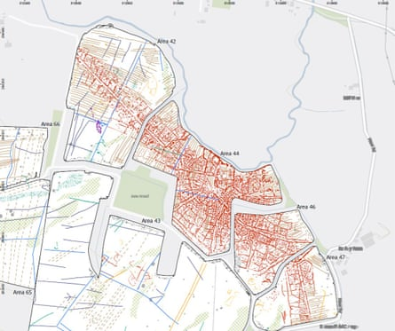

The well-preserved remains of a Roman town discovered during survey work for a solar farm in Cambridgeshire have been given heritage protection status as a scheduled monument.
The buried archaeological features of the settlement near Great Staughton extend across 31 hectares (77 acres) and include ditches, pits, post holes, and gravel surfaces that represent roads or yard areas.
The remains show the extensive streets and buildings of a highly organised Roman settlement of an urban character, Historic England said.
Recovered artefacts include pottery, animal bone, glass, copper alloy objects, iron objects, coins and shells. Evidence also suggests there may have been pottery kilns and blacksmith forges.
The first indication that there could be an ancient settlement near Great Staughton came in 2009, and the town was fully identified in 2019 through aerial photography. Crop marks indicated a settlement and a geophysical survey was conducted as part of the East Park Energy solar and storage project.
Recognising the historic importance of the remains, Brockwell Storage & Solar, the developers behind the renewable energy project, amended its plans and applied for heritage protection of the site, which has been given by the Department for Culture, Media and Sport on the advice of Historic England.
The site appears to focus on a central open space, with trackways radiating from it, forming a network of roads. Between the roads, there are organised rectangular enclosures. Away from the central space, crop marks indicating numerous large pits suggest industrial activity of some kind.
The layout of the Roman town near Great Staughton, Cambridgeshire.Photograph: AOC Archaeology
Historic England said it was possible that streams which used to lead to the River Kym had been altered to supply water or contribute to an industrial process. On the higher ground, overlooking the town, there was a Roman villa.
Duncan Wilson, the chief executive of Historic England, said: “This was clearly a significant Roman town. The scale and diversity of the archaeological features give a remarkable insight into Roman life in the east of England and help us to understand more about when people came to this place, how they lived and worked, and why they left.”
Victoria Oleksy, the associate director at AOC Archaeology Group, which conducted the evaluation work, said: “It’s quite rare to find such an archaeologically significant site and on such a large scale. The potential for the site to add to our understanding of Roman settlement is considerable.”
Chris Bryant, the heritage minister, said: “As this newly discovered Roman town shows, our history is full of remarkable and often inspiring stories. That’s why it is so important to unearth and burnish our historic treasures to protect them for generations to come. This gives us a rare insight into the history of a life long before ours and will continue to expand our knowledge and understanding of the Roman era.”
Roman small towns began to emerge in Britain the middle of the first century AD. About 140 have been recorded in England, mainly concentrated in the Midlands and central southern England.
To safeguard the Roman town, solar development is no longer proposed on the land, which will be given over to pasture. Historic England and Cambridgeshire county council are advising East Park Energy on the care and management of the newly scheduled monument.